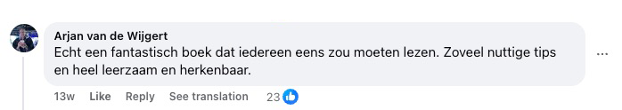
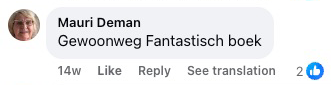
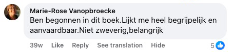
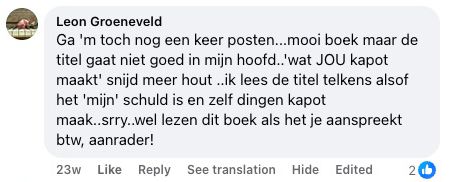
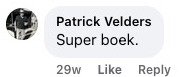
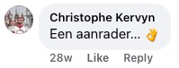

Découvre la méthode surprenante qui t'aide à stopper le flot incessant de pensées, à apaiser tes émotions et à retrouver la paix intérieure — sans habitudes autodestructrices et sans faire semblant que tout va bien alors que ce n'est pas le cas.
Si tu en as assez de t'accrocher à une douleur qui ne t'apporte plus rien – un cœur brisé qui te hante encore, une culpabilité que tu n'arrives pas à lâcher, ou une colère qui ne s'éteint pas – alors ce livre t'offre les outils, les clés et surtout le soulagement que tu attends depuis si longtemps.

Ce livre est pour TOI si...
Tu viens de vivre une rupture et tu n'arrives pas à arrêter de penser à ton ex
tu regardes sans cesse ses réseaux sociaux en espérant un message qui ne vient jamais
La culpabilité te ronge à cause de quelque chose que tu as fait ou n'as pas fait
tu rejoues sans arrêt dans ta tête ce que tu aurais dû dire autrement, et tu te punis chaque jour
Tu n'arrives pas à dormir la nuit parce que tes pensées tournent en boucle
tu t'endors à bout de forces, mais ta tête refuse de s'éteindre et au réveil, tu es encore plus à plat
Tu ressens de la colère ou de la rancune envers quelqu'un qui t'a fait du mal
et même si tu sais que ça te détruit, tu n'arrives pas à lâcher prise
Tu portes la douleur d'une trahison que tu n'as jamais surmontée
que ce soit en amour, en amitié ou en famille, cette blessure n'est toujours pas guérie
Le passé te retient et tu n'arrives pas à avancer
tu vis dans les souvenirs de ce qui a été, au lieu de vivre le présent
Tu as peur de l'abandon et tu fais tout pour ne perdre personne
même si cela signifie te perdre toi-même
Tu ressens un vide intérieur et tu ne sais plus qui tu es sans cette douleur
comme si ton identité était devenue cette souffrance que tu traînes avec toi
9 raisons pour lesquelles ce livre peut changer ta vie
Le vrai changement commence ici – quand tu en as assez de la douleur, des ruminations et du chaos intérieur.
- → Lâcher prise sur un cœur brisé – apprends à transformer la douleur d'une rupture ou d'une perte en force et en paix intérieure
- → Arrêter de ruminer – découvre des techniques pratiques pour briser le ressassement sans fin dans ta tête
- → Pardonner sans oublier – trouve l'équilibre entre lâcher prise et te protéger d'une douleur qui se répète
- → La liberté émotionnelle – libère-toi des chaînes de la colère, de la culpabilité et de la peur qui te retiennent depuis des années
- → Restaurer la confiance en soi – reconstruis ton estime de toi après une période de blessures émotionnelles
- → Poser des limites saines – apprends à dire « non » sans culpabilité et protège ta paix intérieure
- → Faire la paix avec le passé – arrête de vivre dans les souvenirs et commence à construire ton avenir
- → Mieux dormir – apaise ton esprit avant le coucher et réveille-toi avec de l'énergie au lieu de fatigue
- → Un nouveau départ – découvre comment faire de ta douleur ton plus grand maître et bâtir une vie qui fait ta fierté

📋 Caractéristiques du produit
| Titre | Lâche prise sur ce qui te détruit |
| Auteur | Joris de Vries |
| Pages | 360 pages |
| Inclus | Cahier d'exercices (exercices pratiques) |
| Langue | Français |
| Format | Broché |
| Prix | 36 € (TVA incluse) |
| Livraison | Offerte (France) |
| Garantie | Satisfait ou remboursé 30 jours |
Ce livre pourrait être exactement ce qui t'a manqué jusqu'ici dans ta vie 💫
Tu as peut-être déjà fait tellement de tentatives. Lu des livres qui sonnaient bien, mais qui n'allaient jamais vraiment en profondeur. Essayé des méthodes thérapeutiques qui promettaient un soulagement, mais qui, en pratique, ne changeaient rien. Et pourtant, tu es là – parce qu'au fond de toi tu sais qu'il reste encore de l'espoir. Que la paix intérieure est possible. Que la douleur que tu portes n'a pas à rester pour toujours.
📘 Lâche prise sur ce qui te détruit n'est pas un simple livre à ranger sur une étagère. C'est un guide pratique de Joris de Vries, écrit à partir de sa propre expérience de la rumination chronique, de la culpabilité, de l'anxiété et du chaos intérieur. Ce livre t'aide à :
- arrêter de te punir pour le passé,
- briser la spirale des pensées négatives,
- et retrouver confiance en toi et en ton chemin.
Et tout cela d'une manière claire et humaine – sans un seul cliché.
💛 Et ce n'est pas tout – voici ce que tu reçois aujourd'hui :
- Un livre (360 pages) rempli d'outils pratiques qui fonctionnent vraiment
- Un cahier d'exercices à la fin du livre qui t'aide à mettre la théorie en pratique
- 2 e-books bonus gratuits (200 pages supplémentaires) – du contenu qui approfondit ton cheminement intérieur, sur le thème des relations et de la productivité au travail
- Livraison offerte d'une valeur de 6 €
- Garantie satisfait ou remboursé 30 jours – sans question, sans risque
✨ Fais le premier pas dès aujourd'hui.
Clique sur le bouton ci-dessous et commande ton exemplaire aujourd'hui. Pas parce que tu le « dois ». Mais parce que tu mérites de te sentir bien. Sans culpabilité. Sans masque. Et enfin – à ton propre rythme 🌱
MONEY
BACK
Garantie satisfait ou remboursé prolongée
30 jours au lieu de 14 jours – le livre ne te convient pas ? Tu as 30 jours complets pour le retourner et récupérer ton argent.
📖 Lis un extrait de notre livre. Il contient à la fois de la théorie et un cahier d'exercices qui s'adapte à tes besoins personnels 🎯


Si tu n'en peux plus de te battre contre toi-même...
Si, la nuit, tu ressasses ce que tu as dit, ce que tu n'as pas dit, ce que tu as perdu ou ce que tu as gâché...
Si tu espères encore que ça va peut-être s'arranger, ou que ça finira par passer tout seul – mais que tu tournes en rond dans ta tête et que rien ne change...
Alors c'est le livre le plus important que tu ouvriras jamais.
Et voici pourquoi :
Les pensées tournaient sans arrêt dans ma tête – comme une boucle sans fin qui ne s'arrête jamais.
« Et si je l'avais dit autrement à ce moment-là ? »
« Peut-être qu'on aurait encore pu être ensemble. »
« C'est entièrement ma faute. »
Chaque jour ressemblait à un scénario qui se répète – l'angoisse, les souvenirs, le fait de rejouer chaque conversation, chaque silence. Et en moi ?
Le vide. Pas physique, mais intérieur.
J'étais entouré de choses qui me rappelaient ce que j'avais perdu. Et que je n'aurais peut-être jamais dû lâcher. J'ai tout essayé : les thérapies, les affirmations, la méditation, me raisonner...
Mais rien n'allait vraiment en profondeur. Rien ne marchait. Juste un nouveau jour... la même douleur... les mêmes questions.
« Pourquoi je n'arrive pas à avancer ? »
« Qu'est-ce qui ne va pas chez moi ? »
« Pourquoi je continue à espérer ? »
Je sentais que j'étais en train de me perdre.
Et j'ai commencé à douter de pouvoir un jour retrouver la paix intérieure.

Chaque jour sans ce livre est un jour de plus à tourner en rond dans ta propre tête.
Combien d'heures as-tu déjà gaspillées à rejouer ce qui s'est passé – « Si seulement j'avais fait autrement à l'époque... »
Combien de fois as-tu souhaité que la douleur s'arrête enfin ?
Que le silence revienne à l'intérieur ?
Chaque minute sans le bon accompagnement te coûte plus de stress que tu ne le mérites.
Et chaque jour où tu repousses, c'est un jour de plus à traîner une vieille douleur.
Un jour, je me suis dit : « Ça suffit ! »
J'en avais assez de vivre dans l'ombre de la douleur, de la culpabilité et du chaos intérieur.
J'ai commencé à chercher des réponses – et c'est précisément ce qui m'a mené à des prises de conscience qui ont changé ma vie à jamais.
Grâce à ces principes, j'ai cessé d'être un prisonnier de mes propres émotions.
Et au lieu d'une guerre intérieure, j'ai enfin trouvé la paix que j'attendais depuis des années. Et ce qui s'est passé ensuite ?
Les gens autour de moi ont commencé à remarquer le changement.
Ils me demandaient :
« Comment tu as fait ça ? »
Alors j'ai commencé à partager ce qui fonctionne vraiment. Pas des théories. Pas des mots creux. Mais ce qui aide dans les vrais moments de douleur, de perte, de culpabilité et de colère.
Le résultat, c'est ce livre. Un livre qui ne parle pas seulement de « lâcher prise », mais de se retrouver soi-même.
De guérison. Et d'arrêter de se faire du mal. Peu importe que tu souffres d'une rupture récente, d'une ancienne trahison, ou d'années de culpabilité non résolue – envers toi-même ou quelqu'un d'autre.
Ce livre te montre comment retrouver le chemin vers toi-même.
À ta manière.
Sans masque.
Sans pression.
Sans honte.
Et tu sais quoi ?
Je ne suis pas le seul chez qui ça a marché.
Leur vie a changé – et la mienne aussi. Des personnes qui n'avaient pas réussi à lâcher leur douleur depuis des années se sont soudain remises à respirer librement.
Celles qui étaient submergées par la culpabilité se sont regardées dans le miroir sans honte pour la première fois.
Et celles qui se sentaient totalement perdues ont retrouvé le chemin vers elles-mêmes.
Et attention – cette approche fonctionne si bien parce qu'elle touche vraiment à ce qui nous retient à l'intérieur.
De la paralysie intérieure aux crises de colère. De la solitude au port d'un masque.
De l'incapacité à pardonner à la haine de soi. Chaque étape de ce livre est soigneusement construite pour mener à un vrai soulagement – pas seulement un peu d'inspiration pour quelques jours.
Et les résultats ?
Exactement ce à quoi nous aspirons tous : le soulagement, la paix, et la sensation d'être enfin de nouveau chez toi – dans ton corps, dans ta tête et dans ton cœur.
Et tu sais quoi ?
Je pourrais écrire un livre entier rien que là-dessus – rien que sur les histoires de gens dont la vie a complètement changé grâce à cette approche.
Car j'ai partagé ces méthodes avec des personnes de tous âges, de toutes situations de vie, et avec les douleurs intérieures les plus variées. De celles qui venaient de vivre une rupture toute fraîche…
Jusqu'à celles qui refoulaient leur colère depuis 20 ans. De personnes souffrant d'anxiété, qui avaient déjà peur du matin…
Jusqu'à celles qui ne ressentaient plus rien à l'intérieur. Et le résultat ? Un soulagement qu'elles n'auraient même pas pu imaginer.
Le silence intérieur là où, toute leur vie, il n'y avait eu que des cris.
Une respiration sans douleur. Et de l'espace – pour de nouveaux départs, doux et légers.
Certains « experts » m'ont même demandé :
« Est-ce que ça marche vraiment ? »
« Ce n'est pas un peu trop simple ? »
Eh bien…
on y reviendra bientôt. Mais d'abord – regardons encore plus de preuves que ce chemin fonctionne réellement.

📚 Partout en Europe, des personnes ont trouvé la paix grâce à ce livre – elles ont commencé comme toi : épuisées, saturées, mais prêtes pour le changement ✨
Comme si on avait agité une baguette magique…
Plus j'entendais parler de lecteurs aux prises avec la douleur, la perte ou un combat intérieur, plus c'était clair : ces principes fonctionnent partout.
Je sentais que cette approche était différente – mais je ne savais pas encore exactement pourquoi. Alors je suis allé plus loin. J'ai commencé à voir des schémas.
Des dialogues intérieurs récurrents, des mécanismes de défense, qui se répétaient encore et encore.
J'ai testé. Observé. Réfléchi. Et pas à pas, j'ai construit une méthode qui ne s'attaque pas seulement aux symptômes, mais à la cause. Et les résultats ?
Des gens qui pensaient ne jamais changer ont soudain ressenti un soulagement sincère.
Ceux qui croyaient que « c'est comme ça, c'est qui je suis » se sont remis à grandir.
Et ceux qui se sentaient totalement perdus ont retrouvé leur boussole.
Depuis, j'ai appliqué cette méthode à presque toutes les blessures qui touchent le plus les gens :
- Culpabilité & honte : Apprends à te pardonner et à cesser de te punir pour des erreurs du passé. À la place, tu retrouves de la légèreté et de l'estime de toi.
- Colère & rancune : Tu obtiens des outils pour lâcher les vieilles blessures et arrêter de te battre dans ta tête contre ceux qui t'ont fait du mal. Pas pour « régler tes comptes », mais avec la certitude qu'ils n'ont plus de pouvoir sur toi.
- Sentiment de solitude : Apprends à créer de la sécurité en toi, même quand personne autour de toi ne te comprend. Tu découvriras que la solitude n'est pas synonyme de vide.
- Rumination constante : Tu arrêtes de rejouer les scénarios « et si » et tu apprends à stopper la spirale des pensées avant qu'elle ne t'engloutisse. Ton esprit redevient un lieu de paix, pas une zone d'angoisse.
- Peur de la perte / de l'abandon : Découvre comment gérer la peur profonde de perdre quelqu'un – sans renoncer à ton besoin de proximité ni à ton estime de toi.
- Le poids du passé : Apprends à cesser de vivre dans le passé – et à faire enfin ton premier vrai pas en avant. Pas juste « laisse tomber », mais une vraie guérison de l'intérieur.
Et ça marche dans toutes les situations où tu essaies de lâcher quelque chose qui te retient à l'intérieur.
Tu peux appliquer ces principes dans ta propre vie – et commencer enfin à vivre avec légèreté, avec paix, et avec la certitude que tu peux y arriver.
Ce n'est pas de la théorie. Ni du blabla spirituel creux.
C'est un système pratique qui aide des lecteurs dans toute l'Europe à composer avec la culpabilité, le chagrin, l'anxiété, la colère et l'immobilisme.
Chaque outil de ce livre vient directement de l'expérience personnelle – né d'années de recherche, d'histoires vraies, d'essais et d'erreurs.
Et c'est précisément pour ça que j'ai décidé de partager mes découvertes. Pour que tu n'aies pas à traverser la même douleur que moi.
Ces soirées interminables où tu craques sous le poids de tes propres pensées. Ce sentiment épuisant de tout essayer… et que rien ne marche.
Ce désespoir silencieux où tu te dis :
« Peut-être que ça ne passera jamais. »
Mais rien ne t'oblige à rester là.
Ce livre te montre qu'il existe un autre chemin – et qu'il est plus proche que tu ne le penses.
Et je comprends si tu doutes encore. Mais pas d'inquiétude – tout à l'heure je te révélerai le « secret » derrière la raison pour laquelle je partage tout ça… et pourquoi ça ne coûte pas des centaines d'euros.
Mais d'abord – regardons de plus près…
Des lecteurs aux Pays-Bas, en Belgique, en Suède, en Norvège et en Allemagne
se sont reconnus dans ce livre.
Comprendre, c'est le début de la guérison 💡
📌 Des avis officiels des Pays-Bas — sans un seul mot inventé.
Les avis que tu vois ci-dessous sont de vrais posts et commentaires Facebook venant des pays où le livre est paru en premier et où des milliers de lecteurs l'ont déjà lu — c'est pourquoi ils sont en néerlandais.
Nous ne voulions pas mentir. Nous ne voulions pas inventer de faux avis ni enjoliver quoi que ce soit pour paraître plus convaincants.
Nous avons donc choisi, en toute transparence, de publier les avis exactement tels que les lecteurs les ont écrits — dans leur langue d'origine, sans retouche, sans changer un seul mot. Tu as ainsi la certitude de lire de vraies paroles de vrais lecteurs.
Le livre lui-même est entièrement traduit en français — avec soin, précision et le sens de la langue.
📖 Astuce : tu peux aussi lire les avis en français juste en dessous — chaque traduction est accompagnée du commentaire original.
Ce que les lecteurs écrivent — traduit en français
Fais défiler les avis. Sous chaque traduction, tu trouveras le commentaire original de Facebook, pour vérifier son authenticité à tout moment.
















Qui est l'auteur de ce livre ?

Je m'appelle Joris de Vries. Et je n'ai pas écrit ce livre depuis une tour d'ivoire – mais depuis le fond du gouffre de ma vie.
Il y a quinze ans, j'ai perdu tout ce que je connaissais.
Ma relation s'est effondrée. Ma confiance en moi a disparu. Je restais éveillé la nuit, prisonnier de boucles de pensées sans fin. La culpabilité me rongeait de l'intérieur. Je ne savais plus qui j'étais ni pourquoi je devais me lever le matin.
J'ai tout essayé. Les livres de développement personnel, les podcasts, les applis de méditation, les conversations avec des amis. Rien ne touchait l'essentiel.
Jusqu'à ce que je comprenne que je devais trouver la réponse moi-même.
J'ai commencé à lire. Pas un livre, mais des centaines. Sur les neurosciences, la philosophie, la psychologie. J'ai voyagé, parlé avec des gens qui avaient vécu la même chose, et j'ai lentement commencé à assembler les pièces du puzzle.
Ça m'a pris des années. Des années d'essais et d'erreurs. De rechutes et de déclics. De doutes et, finalement – de libération.
- Traversé moi-même les plus profonds abîmes – et retrouvé le chemin du retour
- Des années d'étude personnelle en neurosciences, philosophie et comportement
- Développé une méthode personnelle qui m'a aidé, moi et d'autres
- Résumé tout ce que j'ai appris dans ce livre – pour que tu n'aies pas à faire le même détour
Ce que j'ai découvert a changé ma vie :
La plupart des gens ne souffrent pas de ce qui leur est arrivé – mais de ce qu'ils en pensent.
Cette prise de conscience est devenue le fondement de ce livre.
Une combinaison de :
- Enseignements des neurosciences (comment ton cerveau te sabote)
- Philosophie orientale (l'art du lâcher-prise)
- Exercices pratiques (des étapes concrètes qui fonctionnent tout de suite)
📖 Les lecteurs de Lâche prise sur ce qui te détruit vivent dès les premières semaines un véritable changement — plus de paix, de clarté et de soulagement émotionnel 🌟

Ce n'est peut-être pas le premier livre que tu lis 📖
Et c'est peut-être précisément pour ça que ça pourrait être le dernier livre dont tu aies vraiment besoin.
Tu as peut-être déjà tout essayé.
Des conseils qui sonnaient bien, mais qui ne changeaient rien.
Des méthodes qui marchaient… jusqu'à la rechute suivante.
Et pourtant tu es là. Et ça veut dire quelque chose. Ça veut dire que tu n'as pas encore perdu la foi.
Qu'au fond de toi tu sais encore que le soulagement est possible. Que la paix n'est pas un rêve, mais une compétence. Et que ta douleur n'a pas à faire partie de toi pour toujours.
📚 Lâche prise sur ce qui te détruit n'est pas un pansement – c'est une carte.
Une carte pour retrouver le chemin vers toi-même. Dans ce livre, l'auteur Joris de Vries partage des étapes claires, efficaces et humaines qui l'ont aidé, lui et d'autres, à :
- lâcher la culpabilité et l'autopunition,
- briser le cercle des ruminations et des voix intérieures,
- retrouver confiance – en soi, en la vie et dans les autres.
N'attends pas de blabla spirituel vaporeux. Ni de psychologie froide et sans compassion. Attends-toi à de l'authenticité. De l'ouverture. Et du soulagement.
✨ Le premier pas est petit. Mais il peut tout changer.
Tu n'as pas besoin d'avoir tout résolu pour commencer. Tu n'as pas besoin d'être solide – juste d'accepter l'idée que les choses peuvent changer.
👉 Clique sur le bouton et commence à lire.
Tu y trouveras peut-être cette paix que tu cherches depuis tout ce temps.
Livraison offerte
D'une valeur de 6 € – on paie les frais de livraison à ta place. Tu ne paies que le livre – on s'occupe du reste. Livraison en point relais Mondial Relay ou à domicile.
🎁 Les bonus ci-dessous ne sont disponibles qu'aujourd'hui pour les commandes de Lâche prise sur ce qui te détruit – ne laisse pas passer cette occasion unique ! ⏰

🎁 BONUS n°1 : E-book L'Antidote à l'overthinking
Cet e-book bonus exclusif, tu le reçois gratuitement quand tu commandes aujourd'hui. Il contient des outils et exercices pratiques qui complètent parfaitement le contenu principal.
- Des fiches d'exercices supplémentaires pour une exploration de soi plus profonde
- Des exercices quotidiens pour mettre la théorie en pratique
- Des enseignements bonus exclusifs que tu ne trouveras nulle part ailleurs
- Téléchargeable immédiatement après ta commande

🎁 BONUS n°2 : E-book L'amour sans foutaises
La vérité sur les relations dont personne n'ose parler. Arrête de vouloir plaire à tout prix. Arrête de te perdre dans une relation qui t'épuise, te fait mal et te brise lentement. Retrouve ta force, ta clarté et ta capacité à choisir ce que toi tu veux – pas ce que les autres attendent de toi.
Ce n'est pas un guide feel-good sur la communication. Ce livre est une confrontation avec toi-même. Pourquoi tu en es là. Et ce que tu dois faire pour en sortir.
Tu sens que quelque chose ne va pas dans ta relation ? Tu te demandes si c'est de ta faute – ou de celle de l'autre ? Tu as perdu le lien, l'attirance, ou toi-même ? Ce livre brise tes illusions. Et t'aide à te relever.
- Découvre tes schémas d'autodestruction et apprends à les gérer
- Reprends le contrôle de tes émotions, de tes peurs et de tes réactions
- Comprends ce que signifie un véritable engagement – et quand il est temps de partir
- Assume l'entière responsabilité et crée une relation qui fonctionne vraiment
- N'attends pas que l'autre change. Change toi-même – et tout change avec toi
Tu te demandes peut-être maintenant – « Pourquoi dépenser de l'argent pour ce livre ? » 🤔📘 La réponse est simple :
Tu as 30 jours pour l'essayer – ça ne te plaît pas ? On te rembourse.
Sans question, sans complications. Mais on sait tous les deux que tu ne le renverras pas. Car dès que tu commenceras à lire, tu sentiras que ce livre peut changer ta vie.
Ce qui rend ce livre différent :
- Applicable en pratique – Ce livre n'offre pas seulement des prises de conscience, mais aussi des étapes concrètes que tu peux appliquer tout de suite dans ta vie quotidienne.
- Basé sur l'expérience – Les méthodes viennent d'une expérience personnelle et d'années d'étude, pour que tu saches que tu apprends des outils honnêtes et éprouvés.
- Centré sur une guérison profonde – Contrairement à d'autres livres, celui-ci s'attaque au cœur de ton bagage émotionnel, pas seulement aux symptômes de surface.
- Connexion émotionnelle – Le livre est écrit avec empathie et compréhension, pour te donner un sentiment d'écoute et de soutien pendant ton cheminement vers la paix intérieure.
- Des enseignements uniques – Ce livre offre des perspectives surprenantes que tu ne trouveras nulle part ailleurs, et qui te permettent de porter un regard totalement neuf sur toi-même et tes émotions.
Un livre que tu lis à ton propre rythme
Pas de précipitation, pas de pression. Commence quand tu le sens et prends le temps qu'il te faut.
Des outils pratiques pour chaque jour
Avec des exercices concrets et un cahier d'exercices, tu peux te lancer tout de suite – étape par étape, à ton propre rythme.
Tu mérites d'être libre
Lâcher prise n'est pas une faiblesse – c'est une force. Ce livre t'aide à faire de la place à ce qui te fait vraiment du bien.
📦✨ Envie de commencer ? Commande aujourd'hui et reçois le pack complet chez toi 📘🙏
Ton voyage vers la paix intérieure commence ici.
📘 Tu reçois ce pack complet pour seulement 36 € – moins qu'un dîner pour deux ou un plein d'essence.
Mais contrairement à ces choses-là, ce livre t'apporte une valeur pour toute la vie. 💎💚
Il t'aide à trouver la paix intérieure, à lâcher une douleur que tu portes depuis des années, et à te sentir enfin de nouveau chez toi, en toi-même. ❤️
Grâce à ce petit investissement, tu accèdes à des outils pratiques que tu pourras utiliser pendant des années – quand tu en as besoin, à ton propre rythme. 💶🌱
❓ Questions fréquemment posées 💬
Est-ce que ça marche vraiment ? N'est-ce pas encore un livre de développement personnel creux ?
Je comprends parfaitement ton doute. « Lâche prise sur ce qui te détruit » n'est pas un livre de développement personnel typique, plein de conseils vagues et de belles citations. Il est basé sur une expérience personnelle et des années d'étude personnelle en neurosciences, philosophie et comportement. Joris de Vries a développé ces techniques après avoir lui-même traversé un profond gouffre et retrouvé le chemin du retour. La différence tient aux étapes pratiques et concrètes qui fonctionnent vraiment – même quand tu te sens au plus bas. Et avec notre garantie satisfait ou remboursé 30 jours, tu ne prends absolument aucun risque.
J'ai déjà essayé tellement de choses, pourquoi ce serait différent ?
C'est compréhensible d'être sceptique – c'est frustrant d'investir du temps et de l'espoir dans différentes méthodes qui, au final, n'apportent aucun vrai changement. Ce qui rend ce livre différent, c'est l'approche directe et pratique, basée sur une expérience personnelle, pas sur de la théorie sèche. Le livre est né de l'histoire vraie de l'auteur, qui avait lui aussi « tout » essayé, mais qui a finalement trouvé le soulagement grâce à sa propre méthode. Contrairement aux conseils généraux, tu obtiens ici des techniques concrètes qui fonctionnent même dans les moments où tu es à bout. Et si jamais le livre ne fonctionne pas pour toi, tu peux l'essayer sans aucun risque grâce à notre garantie satisfait ou remboursé 30 jours.
Et si ça ne marche pas pour moi ? Ma situation est différente ou plus complexe.
Chaque personne est unique et porte sa propre histoire. C'est justement pour ça que « Lâche prise sur ce qui te détruit » a été conçu pour offrir des approches flexibles, adaptables à différentes situations et différents niveaux de complexité – des ruptures récentes aux douleurs non résolues depuis des années. Le cahier d'exercices du livre te permet d'appliquer les méthodes à ta situation spécifique. Des lecteurs aux histoires les plus variées – du deuil à la culpabilité, de la colère à l'inquiétude – ont déjà tiré profit de ce livre. Et n'oublie pas : nous offrons une garantie satisfait ou remboursé 30 jours, sans questions embarrassantes.
36 €, n'est-ce pas trop cher pour un livre ?
Tu reçois un pack complet – non seulement un livre de 360 pages avec un cahier d'exercices pratique, mais aussi deux e-books bonus précieux totalisant 200 pages supplémentaires (« L'Antidote à l'overthinking » et « L'amour sans foutaises »), plus la livraison offerte d'une valeur de 6 €. Beaucoup de lecteurs nous ont dit qu'un seul enseignement du livre leur avait fait gagner énormément de temps et d'énergie. Pour le prix d'une soirée, tu obtiens des outils que tu pourras utiliser pendant des années. Et avec notre garantie satisfait ou remboursé 30 jours, tu ne prends absolument aucun risque.
Ne vaudrait-il pas mieux investir dans un thérapeute plutôt que dans un livre ?
La thérapie et ce livre ne s'excluent absolument pas – au contraire, ils peuvent se renforcer mutuellement. Beaucoup de gens utilisent ce livre comme premier pas sur leur chemin de rétablissement, ou l'utilisent en complément d'une thérapie pour une compréhension plus profonde et pour s'exercer entre les séances. Pour une fraction du coût de quelques séances de thérapie, tu obtiens des outils que tu peux utiliser quand tu en as besoin – en pleine nuit, dans l'intimité de ta maison, à ton propre rythme. Tu peux te lancer tout de suite, sans liste d'attente. Et si tu as besoin plus tard d'un accompagnement personnel, ce livre te donne une base solide qui te permettra de profiter bien plus efficacement de la thérapie.
Qui est Joris de Vries ? Puis-je lui faire confiance ?
Joris de Vries est un auteur qui a lui-même traversé un profond gouffre personnel – et qui en est ressorti plus fort. Après des années d'étude personnelle en neurosciences, philosophie et comportement, il a développé une méthode pratique qui l'a aidé à lâcher prise sur ce qui le détruisait. Les méthodes de ce livre ne sont pas théoriques – elles sont nées d'une véritable expérience personnelle. Son approche combine des enseignements de différentes disciplines, traduits en techniques accessibles que tout le monde peut appliquer. Tu peux essayer sa méthode sans risque grâce à notre garantie satisfait ou remboursé 30 jours complète.
Pourquoi ce livre n'est-il pas tout simplement sur Amazon ou en librairie ?
Nous avons délibérément choisi la vente directe pour t'offrir la meilleure expérience. Cela nous permet d'ajouter des bonus précieux (deux e-books supplémentaires d'une valeur de plus de 30 €), d'offrir la livraison et une garantie satisfait ou remboursé 30 jours personnelle – des choses impossibles via les grandes plateformes qui prélèvent 40 à 60 % de commission. De plus, nous pouvons ainsi offrir un service client direct et répondre rapidement à tes questions. Tu obtiens plus de valeur pour ton argent, et nous pouvons construire une relation directe avec toi.
Le livre est-il aussi disponible en e-book ?
Pour le moment, le livre n'est disponible qu'en version papier. Tu le reçois directement chez toi, prêt à être ouvert dès le premier soir.
Combien de temps avant de recevoir le livre ?
Ton livre est livré sous 3 à 5 jours ouvrés après réception de ta commande. Nous expédions sous 24 heures, puis il t'est envoyé directement – entièrement gratuitement, car les frais d'envoi et d'emballage sont inclus dans le prix. La livraison se fait en point relais Mondial Relay ou à domicile. Après l'expédition, tu reçois un e-mail de confirmation avec les informations de suivi. Si, pour une raison quelconque, la livraison prend plus de temps, n'hésite pas à nous contacter à joris@lacheprise-livre.fr et nous examinerons la situation immédiatement. Tu veux commencer tout de suite ? Les 2 e-books bonus arrivent dans ta boîte mail juste après ta commande.
À qui s'adresse ce livre ? Correspond-il à ma situation ?
Ce livre est pour toute personne aux prises avec un fardeau émotionnel – qu'il s'agisse de la douleur après une rupture, d'une culpabilité qui te hante, d'une colère que tu n'arrives pas à lâcher, de rumination chronique, de la peur de l'abandon, ou du sentiment d'être complètement à la dérive. Il est écrit pour des personnes dans toutes sortes de situations de vie : de celles qui ont récemment vécu une perte à celles qui portent une douleur non résolue depuis des années. Le livre est délibérément écrit sans jargon, pour qu'il soit accessible à tous. Tu peux adapter les méthodes à tes besoins personnels grâce au cahier d'exercices pratique qui l'accompagne.
La garantie satisfait ou remboursé 30 jours est-elle vraiment sans complications ?
Absolument. Si tu ne constates aucune amélioration en 30 jours ou si, pour une raison quelconque, le livre ne te convient pas, on te rembourse intégralement. Il te suffit de nous retourner le livre en parfait état (100 %), et dès que nous l'avons reçu, nous traitons ton remboursement immédiatement. Pas de formulaires compliqués, pas de questions gênantes sur les raisons pour lesquelles ça n'a pas marché, aucune complication. Envoie simplement un e-mail à joris@lacheprise-livre.fr et nous nous occupons de tout. Nous faisons cela parce que nous avons pleinement confiance en la valeur de ce livre, et nous voulons que tu puisses l'essayer sans souci. Ta satisfaction et ton bien-être comptent plus que la vente.
Comment savoir si ce livre va vraiment m'aider ?
Chaque personne est différente, et nous ne pouvons pas promettre de résultats précis. Ce que nous pouvons dire : le livre propose des exercices concrets et un cahier d'exercices avec lesquels tu peux te lancer tout de suite. Les lecteurs nous disent régulièrement que l'approche pratique les a vraiment aidés. Tu peux lire les avis sur cette page pour te faire une idée. Et le plus important : avec notre garantie satisfait ou remboursé 30 jours, tu ne prends aucun risque. Ça ne marche pas pour toi ? On te rembourse.
Mon paiement est-il sécurisé ? Puis-je faire confiance à cette entreprise ?
Ton paiement est entièrement sécurisé. Le paiement est autorisé par des services fiables comme PayPal, la carte bancaire, Stripe et Klarna. Toutes ces entreprises veillent à ce que le paiement soit sûr, rapide et équitable pour les deux parties. Nous utilisons des prestataires de paiement qui respectent les normes de sécurité les plus élevées (chiffrement SSL et conformité PCI-DSS). Tes données financières ne sont jamais stockées par nous – tout est traité directement et en toute sécurité par le prestataire de paiement. Nous sommes une entreprise enregistrée (Performance Marketing Solution s.r.o., IČO : 06259928) avec des conditions générales transparentes et une politique de confidentialité. De plus, nous offrons un service client complet à joris@lacheprise-livre.fr. Et n'oublie pas : avec notre garantie satisfait ou remboursé 30 jours, tu ne prends de toute façon aucun risque financier.